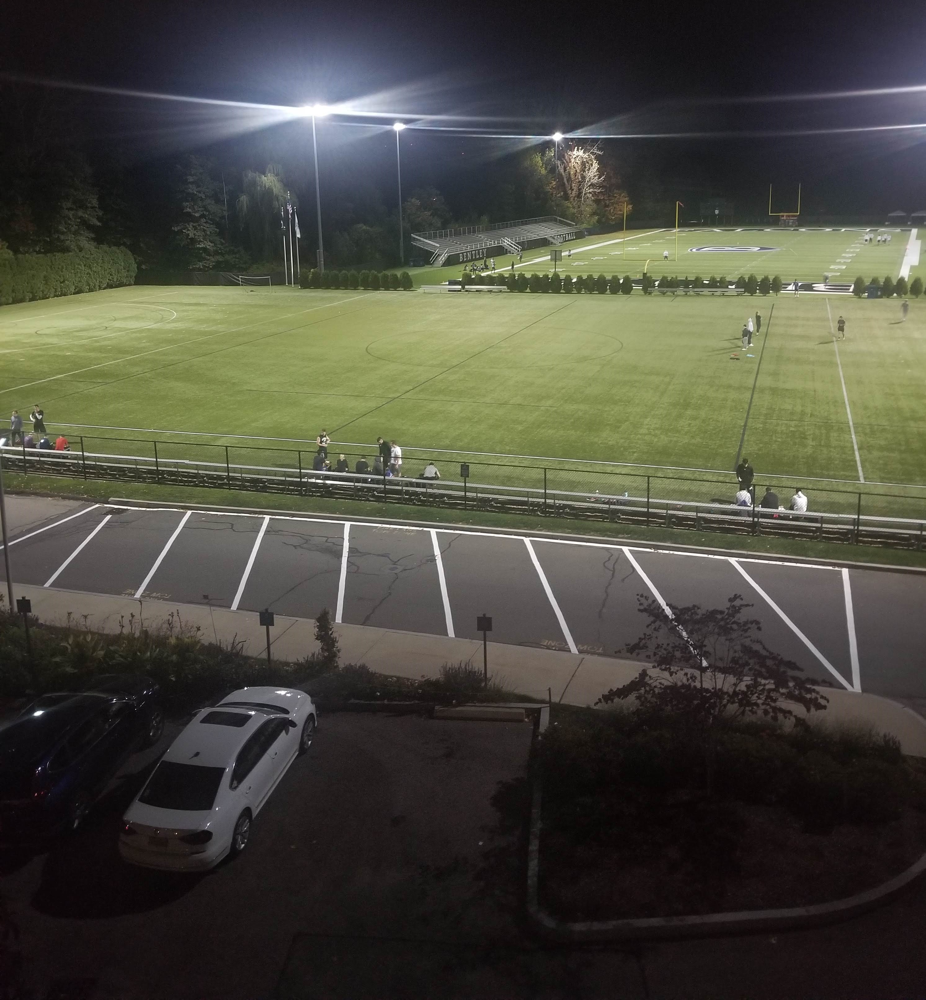
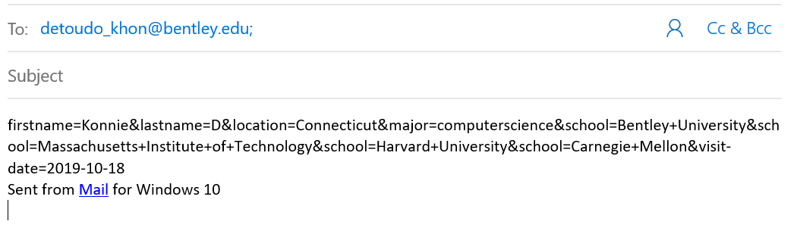

What my experience at Bentley has been after attending this university for a year and a half.
One of my favorite experiences from while I was here at Bentley was when I went to Quincy Market over the Labor Day weekend
with my friend, Joana. During this experience, we went to Shake Shack in Harvard Square for lunch before deciding to go
shopping at Quincy Market. This experience is special to me because Joana has become one of my closest friends at Bentley
and we had never hung out in Boston together because the last time we planned to, both of us fell sick. Through this expereience
I was grateful to find an great friend who is supporting of me and shares the same interests as me.
Another one of my favorite experiences at Bentley would be attending Codestellation at Brandeis University.
This event was a Hackathon which is a type of coding competition that lasts 24 hours. The people I attended Codestellation
with were members of the Bentley Programming Club and going through this competition, I became better friends with
those in attendance. Also, this experience is special to me because it solidified the fact that I wanted
to do some work with programming, not just front-end. However, for now, I am focused on learning about HTML, CSS,
JavaScript, React.js, and BootStrap.

In this picture of Bentley, it represents my fall experience because in the fall, people are always plays sports.
I have only attended a handful of games, but now I can watch sports practices from my window or see
people just playing for fun on the field. Sports are something that always occupied the fall for me, so I
enjoy still being able to watch them here at Bentley.
My Keep-Us-Warm Homecoming Drink
Apple Cider Recipe
Please input the number of servings you wish to make and then press the 'Party Size' button and your
ingredient amounts will appear:
The drink that this recipe will be making is homemade apple cider
Number of Apples Cut into Quarters
Cups of White Sugar
Tablespoons of Ground Cinnamon
Tablespoons of Allspice
Instructions for 16 servings of Apple Cider from Allrecipes.com
Place apples in a large stockpot and add enough water to cover them by at least 2 inches. Stir in sugar, cinnamon,
and allspice.
Bring to a boil. Boil the mixture uncovered for an hour. After an hour, cover the pot, reduce the heat and let
simmer for an additional 2 hours.
Strain the apple mixture through a fine mesh sieve and discard the solids. Drain the cider again through a cheesecloth
lined sieve. Refrigerate until cold.
This recipe was from Allrecipes.com and was written by user Scollins. Click here
for the original recipe.
(https://www.allrecipes.com/recipe/211772/homemade-apple-cider/)
Senior Survey

MY WORK
Here are the pictures I have taken during my time at Bentley Click on the images to make them bigger